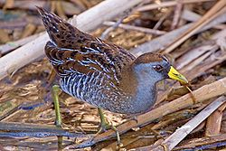
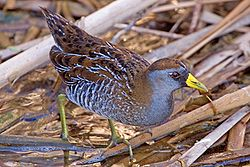

| Sora | |
|---|---|
|  | |
| Conservation status | |
| Binomial name | |
| Porzana carolina (Linnaeus, 1758) |
| Sora | |
|---|---|
|  | |
| Conservation status | |
| Binomial name | |
| Porzana carolina (Linnaeus, 1758) |
The Sora (Porzana carolina) is a small waterbird of the family Rallidae, sometimes also referred to as the Sora Rail or Sora Crake.
Adults Soras are 20–25 centimeters (7.9–9.8 in)[1] long, with dark-marked brown upperparts, a blue-grey face and underparts, and black and white barring on the flanks. They have a short thick yellow bill, with black markings on the face at the base of the bill and on the throat. Sexes are similar, but young Soras lack the black facial markings and have a whitish face and buff breast. They weigh about 49–112 grams (1.7–4.0 oz)[1].
The Sora's breeding habitat is marshes throughout much of North America[2]. They nest in a well-concealed location in dense vegetation. The female usually lays 10 to 12 eggs, sometimes as many as 18, in a cup built from marsh vegetation. The eggs do not all hatch together. Both parents incubate and feed the young, who leave the nest soon after they hatch and are able to fly within a month.
They migrate to the southern United States and northern South America. Sora is a very rare vagrant to western Europe, where it can be confused with Spotted Crake. However, the latter species always has spotting on the breast. a streaked crown stripe, and a different wing pattern.
Soras forage while walking or swimming. They are omnivores, eating seeds, insects and snails. Although Soras are more often heard than seen, they are sometimes seen walking near open water. They are fairly common, despite a decrease in suitable habitat in recent times. The call is a slow whistled ker-whee, or a descending whinny. The use of call broadcasts greatly increases the chances of hearing a Sora. Call broadcasts can also increase the chances of seeing a Sora, as they will often investigate the source of the call.

.jpg){kind=link}